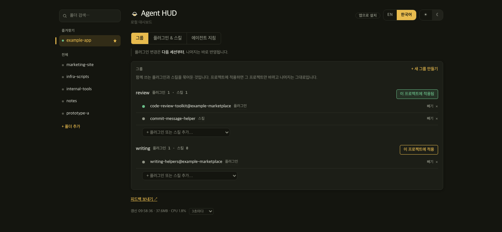

로컬 대시보드
이 프로젝트가 스킬 몇 개를 로드하는지 보여준다.
함께 쓰는 플러그인과 스킬을 그룹으로 묶어 프로젝트마다 다르게 적용한다.

쓰든 안 쓰든, 설치한 스킬은 전부 로드된다
코딩 에이전트는 세션을 시작할 때 설치된 스킬마다 이름과 설명을 모델 입력에 넣는다. 본문은 그 스킬을 쓸 때만 읽지만, 이름과 설명은 그 세션에서 쓰지 않는 스킬까지 전부 들어간다.
플러그인을 끄는 기본 명령은 사용자 전역 설정에 기록한다. 한 프로젝트에서 끄면 다른 프로젝트에서도 꺼진다.
추정이 아니라 실측이다
스킬 하나당 metadata는 Agent Skills 명세 기준 약 100토큰이다. 실제 값은 설치된 스킬들의 설명 길이에 따라 다르다.
탭 세 개


그룹
적용하면 그 그룹의 스킬이 프로젝트 스킬 폴더에 링크되고, 플러그인 값이 그 프로젝트의 설정 파일에 적힌다. 다른 프로젝트의 설정은 바뀌지 않는다. 플러그인 변경은 다음 세션부터 반영된다.
agent-hud apply backend agent-hud groups
다른 에이전트
스킬 형식은 공개 표준이라 폴더째 옮겨진다. 체크박스 하나로 같은 스킬을 여섯 에이전트의 스킬 폴더에 링크한다. Cursor는 아직 실측 확인을 못 했다.
에이전트 지침
프로젝트 트리에서 지침 파일 30종을 찾아 크기와 수정 시각을 보여준다. 내용을 비교하지는 않는다. 색인이고, 대조는 사람이 한다.
설치
| 의존성 | 없음 (표준 라이브러리) |
| 네트워크 | 127.0.0.1 전용 |
| 계정 | 필요 없음 |
| 라이선스 | MIT |
git clone https://github.com/ganggangstone/agent-hud.git cd agent-hud && ./install.sh
또는 brew install ganggangstone/tap/agent-hud
브라우저가 열리고 127.0.0.1:7717에 뜬다. macOS 전용 — Linux는 systemd --user 유닛으로 돌리면 되고, Windows는 아직 지원하지 않는다(#1).
계정이 필요 없다. 이 컴퓨터의 설정 파일만 읽고 쓴다. 컴퓨터 밖으로 나가는 요청은 새 버전 확인용 GitHub Releases 조회 하나다.